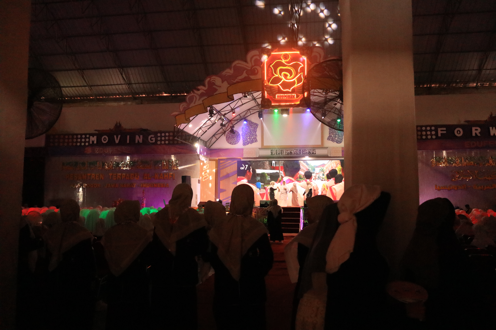
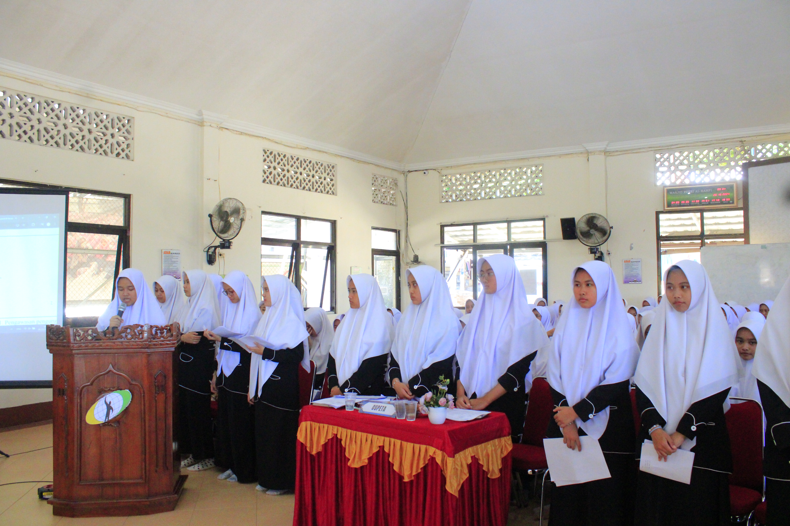
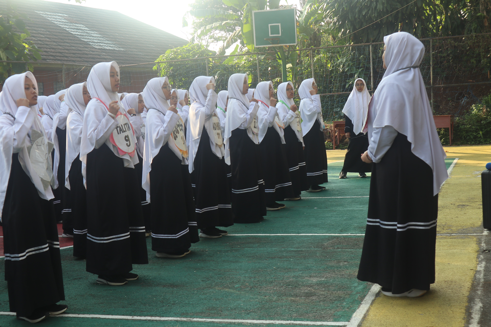

SMAIT
AL-KAHFI
AL-KAHFI
Tumbuh bersama dalam pendidikan dan kehidupan pesantren, menjadi pribadi shalih, mushlih, dan qudwah.

 Kepala Sekolah
Kepala Sekolah
"Pendidikan bukan sekadar tentang mengejar nilai tertinggi, melainkan tentang membentuk karakter yang beradab dan tangguh menghadapi masa depan. Di balik setiap dinding kelas dan proses belajar yang kalian lalui di sekolah ini, ingatlah bahwa keberhasilan sejati lahir dari konsistensi, keberanian mencoba hal baru, serta kerendahan hati untuk terus bertumbuh dan memberi manfaat bagi sesama."


Kegiatan Education Festival yang diselenggarakan oleh Ospeta dengan mengundang berbagai tokoh dan alumni inspiratif juga menyelenggarakan berbagai lomba yang menarik dan edukatif.



OSPETA (Organisasi Santri Terpadu Al-Kahfi) adalah organisasi yang dibentuk untuk membina para siswa agar dapat mengasah bidang manajerial dan ide kreatifnya untuk membuat acara yang dapat menghibur adik kelasnya.


PPM (Praktek Pengenalan Masyarakat) adalah kegiatan mengabdi untuk masyarakat sekitar agar para siswa tidak hanya berdampak untuk sekolah saja tetapi juga dengan lingkungan yang ada di sekitarnya juga.